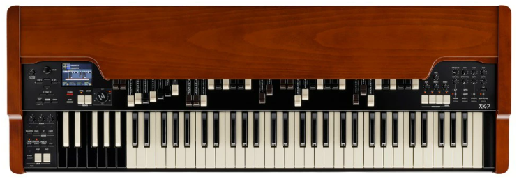
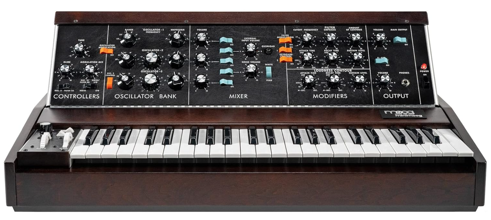
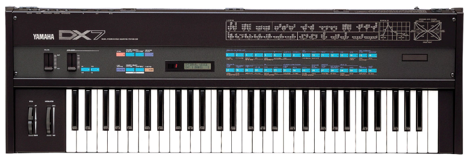

1. 倍音加算方式（Additive Synthesis）
倍音加算方式は、音を複数の倍音を足し合わせて作る方式です。web audio api の Oscillator ノードで使用できる波形選択に “custom” というものがあり、これを使うと倍音加算方式の音源を作ることができます。これでドローバーオルガンをイメージして作ってみました。

2. 倍音減算方式（Subtractive Synthesis）
倍音減算方式は、最初に倍音を多く含む音を作り、フィルターで不要な倍音を削って音色を作る方式です。web audio api の、オシレーターには周波数の指定や波形の指定などのパラメータがありますので、これらを設定できるようにしてみます。また汎用的なフィルタとして「BiquadFilter」、日本語では「双2次フィルター」という形式のものが用意されています。これらを利用してアナログ・シンセサイザーをイメージして作ってみました。

3. FM音源方式（Frequency Modulation Synthesis）
周波数変調（frequency modulation, FM）を応用する音色合成方式を用いた音源。
元の波形を別の波形で揺らして（変調して）別の形の波形にして出力するという音源です。波形生成のパラメーターを変化させることにより倍音成分が大きく変化し、音色を劇的に変化させることが可能です。しかし、その挙動はカオスであるため、パラメータの変動による倍音変化は予測するのが難しいです。
